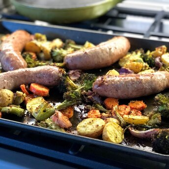

Sausage and Vegetable Sheet Pan Dinner

Description
An easy dinner exploding with flavor baked all in one pan!
Broccoli, baby potatoes, and carrots are tossed in
a mixture of olive oil, whole grain mustard, and Pecorino cheese,
then baked alongside mild Italian sausage.
The result is a satisfying family-friendly supper that requires
hardly any effort.
Ingredients
- 1 large head broccoli, cut into florets
- 10 ounces baby potatoes, halved
- 1 large carrot, sliced
- 1/2 red onion, roughly chopped
- 3 tablespoons olive oil
- 2 tablespoons whole grain mustard
- 2 tablespoons grated Pecorino Romano cheese
- 1 teaspoon dried thyme
- 1/2 teaspoon dried oregano
- salt and ground black pepper to taste
- 4 mild Italian sausage links
Steps
- Preheat the oven to 400 degrees F (200 degrees C).
- Place broccoli, baby potatoes, carrot, and onion in a large bowl. Pour in olive oil, mustard, Pecorino Romano cheese, thyme, oregano, salt, and pepper. Toss well to coat, then spread vegetables in an even layer on a sheet pan. Arrange sausages in the pan, pushing aside the vegetables so that the sausages touch the bottom of the pan.
- Bake in the preheated oven, flipping sausages and vegetables halfway through until sausages are no longer pink in the center, 30 to 35 minutes. An instant-read thermometer inserted into the center should read 160 degrees F (70 degrees C).